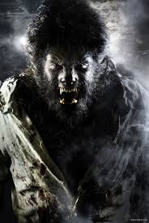

La llorona
La leyenda de la llorona
El hombre Lobo
El hombre lobo, tambien conocido como licantropo, es una criatura legendaria presente en muchas culturas independientes a lo largo del mundo. Se ha dicho que este es el mas universal de todos los mitos (probablemente junto con el del vampiro), y aun hoy, mucha gente cree en la existencia de los hombres lobo o de otras clases de hombres bestia. Todas las caracteristicas tipicas de aquel animal como son la ferocidad, la fuerza, la astucia y la rapidez son en ellos claramente manifiestas, para desgracia de todos aquellos que se cruzan en su camino
